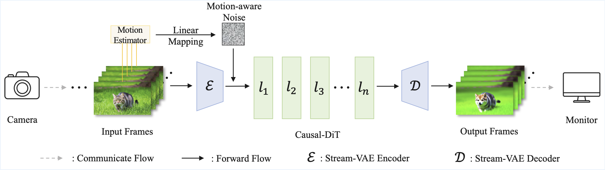
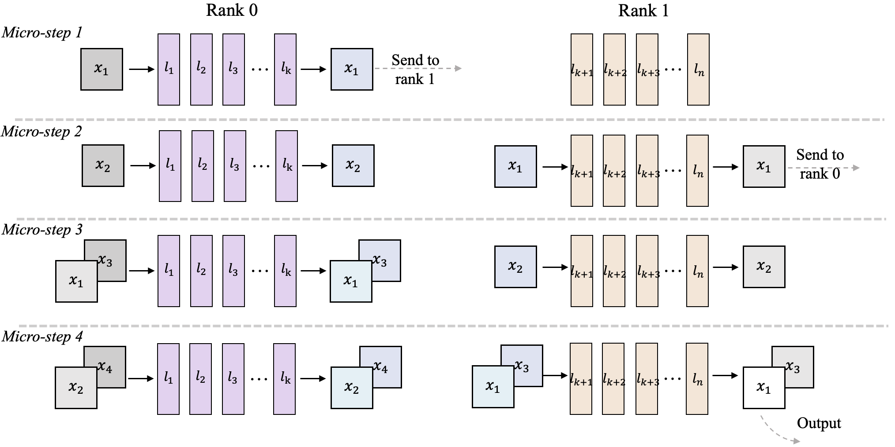
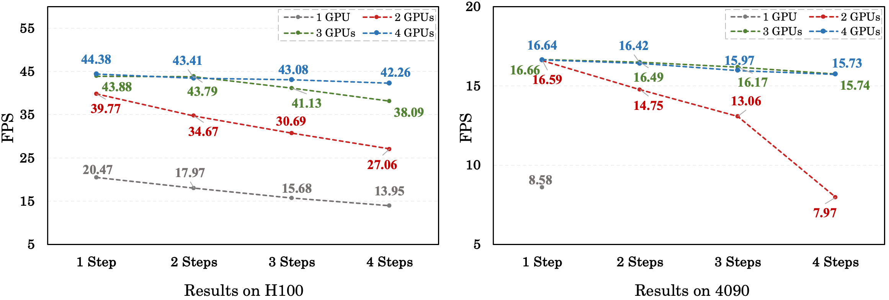

StreamDiffusionV2: An Open-Source Streaming System for Real-Time Interactive Video Generation
† Project lead, corresponding to xuchenfeng@berkeley.edu
* This work was done when Tianrui Feng visited UC Berkeley, advised by Chenfeng Xu.
Abstract
Generative models are reshaping the live-streaming industry by redefining how content is created, styled, and delivered. Our first release, StreamDiffusion, has powered efficient and creative live-streaming products (e.g., Daydream, TouchDesigner) but hit limits on temporal consistency due to the foundation of image-based designs. Recent advances in video diffusion have markedly improved temporal consistency and sampling efficiency for offline generation. However, offline generation systems primarily optimize throughput by batching large workloads. In contrast, live online streaming faces strict real-time constraints with small batches: every frame must meet a per-frame deadline with low jitter. Moreover, the online system must dynamically adapt its workload (e.g. steps, resolution, effects) to track user query rates and sustain target throughput under varying load. We bridge the gap in live streaming video design with StreamDiffusionV2: a fully open-source real-time pipeline for interactive live streams with video diffusion models. StreamVAE, sinked rolling KV, dynamic pipeline parallelism, and a motion-aware noise controller to stay stable under dynamical inputs. To cater to users at every level, StreamDiffusionV2 scales seamlessly across diverse GPU environments and supports flexible denoising steps (e.g., 1–4 steps). Without TensorRT and quantization, StreamDiffusionV2 reaches 42 FPS on 4× H100 with a 4-step model, 17.6 (resp. 8.9) FPS on 2× (resp. single) RTX 4090 with a 1-step model—making state-of-the-art generative live streaming practical and accessible from individual creators to enterprise platforms.
Methods
Stream-living pipeline

Fig. 1: The overview pipeline of our StreamDiffusionV2.
StreamDiffusionV2 is a synergy of system- and algorithm-level efforts to achieve stream-living based on video diffusion models. It includes: A dynamic scheduler for pipeline parallelism with stream batch, a StreamVAE and rolling KV, and a motion-aware controller.
Pipeline-parallelism Stream-batch

Fig. 2: The detailed description of our Pipeline-parallelism Stream-batch architecture.
StreamDiffusionV2 aims to cater to users at different scales, from individual creators with one or two GPUs to enterprise platform with more GPUs. We propose pipeline parallelism to offer users various options. This means dividing models among multiple GPUs. Without adaptation, pipeline parallelism alone does not enhance efficiency due to the compute-bound nature of video models. However, partitioning shifts workloads on GPUs to become memory-bound. Transforming the memory-bound inspires us to batch the pipeline for enhanced throughput. We propose a pipeline parallelism with stream batch, as shown in Fig. 2. This approach significantly improves throughput, as shown in Fig. 3.
In addition to the static partition, we find that VAE encoding and decoding create an unequal distribution of tasks across GPUs. To enhance throughput, we propose a scheduler that reallocates blocks across devices dynamically using inference-time measurements. These methods allow for competitive real-time generation performance on standard GPUs, thus reducing the barrier for practical implementation.

Fig. 3: FPS results of our system.
Stream-VAE
Stream-VAE is a low-latency implementation of Video VAE for real-time video generation. Unlike current approaches, which process long video sequences and introduce significant latency, Stream-VAE handles a small video chunk each time. Specifically, four video frames are compressed into a single latent frame during the process. In addition, the cached features are utilized in every 3D convolution module of the VAE to maintain temporal consistency. Stream-VAE ensures temporal consistency while supporting efficient live streaming generation.
Rolling KV Cache and Sink Token
We integrate Causal-DiT with Stream-VAE to enable live-streaming video generation. Our rolling KV cache design differs substantially in several aspects: (1) Instead of maintaining a long KV cache, we adopt a much shorter cache length and introduce sink tokens to preserve the generation style during rolling updates. (2) When the current frame's timestamp surpasses the set threshold, we reset it to prevent visual quality degradation from overly large RoPE positions or position indices exceeding the encoding limit. These mechanisms collectively enable our pipeline to achieve truly infinite-length video-to-video live-streaming generation while maintaining stable quality and consistent style.
Motion-aware Noise Controller
In live-streaming applications, high-speed motion frequently occurs, yet current video diffusion models struggle with such motion. To address this, we propose the Motion-aware Noise Controller, a training-free method that adapts noise rates based on input frame motion frequency. Specifically, we assess motion frequency by calculating the mean squared error (MSE) between successive frames and linearly map this to a noise rate using pre-determined statistical parameters. This method balances quality and movement continuity in live video-to-video live streaming.
Video Transfer Demo
Various Prompts
Live-Streaming Demo
Core Contributors
Tianrui Feng
Chenfeng Xu
Contributors
Zhi Li
Haocheng Xi
Muyang Li
Xiuyu Li
Shuo Yang
Lvmin Zhang
Kelly Peng

Akio Kodaira
BibTeX
@article{streamdiffusionv2,
title={StreamDiffusionV2: An Open-Sourced Interactive Diffusion Pipeline for Streaming Applications},
author={Tianrui Feng and Zhi Li and Haocheng Xi and Muyang Li and Xiuyu Li and Shuo Yang and Lvmin Zhang and Kelly Peng and Song Han and Kurt Keutzer and Akio Kodaira and Chenfeng Xu},
journal={Project Page},
year={2025},
url={https://streamdiffusionv2.github.io/}
}